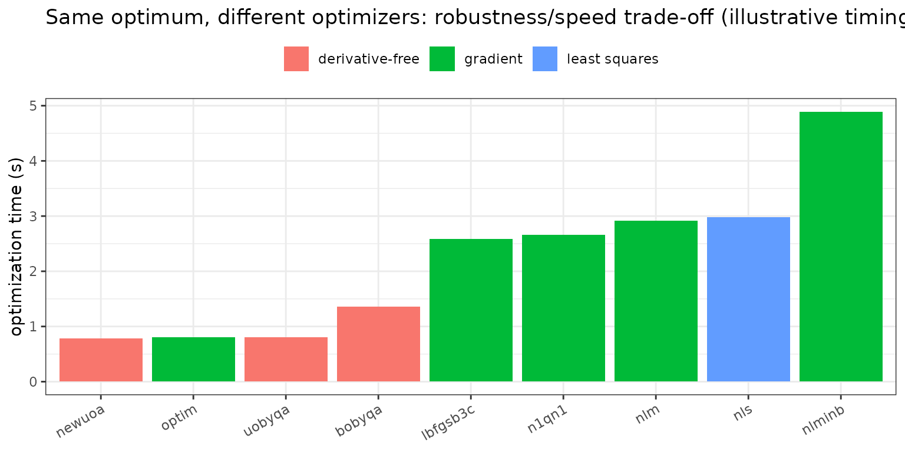

Population-only estimation in nlmixr2: the NLM-family optimizers (nlm, nlminb, bobyqa, ...)
2026-09-18
Source:vignettes/articles/nlm-family-optimizers.Rmd
nlm-family-optimizers.RmdThe NLM family: a menu of optimizers for population-only models
Not every model has random effects. When you fit a single
rich profile, do a naive-pooled analysis, or
explore a structural model before deciding what varies
between subjects, there are no etas to integrate out – the objective is
an ordinary (nonlinear) likelihood in the population parameters, and any
general-purpose optimizer can maximize it. nlmixr2 exposes a whole menu
of them behind the usual est = interface:
-
Gradient / quasi-Newton:
nlm(quasi-Newton),nlminb(PORT),n1qn1(a BFGS variant),lbfgsb3c(L-BFGS-B),optim(Nelder-Mead / BFGS). -
Derivative-free (trust-region):
bobyqa,newuoa,uobyqa(Powell’s methods – no gradients needed, robust to rough objectives). -
Least squares:
nls(Gauss-Newton nonlinear least squares).
These are population-only estimators – they require
a model with no random effects. (Add an eta and nlmixr2 will tell you to
use a mixed-effects method such as focei or
saem instead.) They are the tool for the structural,
single-subject, and naive-pooled corner of a workflow, and a useful
escape hatch when one optimizer stalls on a difficult surface.
Worked example: one objective, many optimizers
A naive-pooled one-compartment fit to the theophylline data – note there are no random effects, so all variability lands in the residual error:
library(nlmixr2)
popModel <- function() {
ini({
tka <- 0.45; tcl <- 1; tv <- 3.45
add.sd <- 0.7
})
model({
ka <- exp(tka); cl <- exp(tcl); v <- exp(tv)
d/dt(depot) <- -ka * depot
d/dt(center) <- ka * depot - cl / v * center
cp <- center / v
cp ~ add(add.sd)
})
}Fit it with every optimizer in the family:
fitNlminb := nlmixr2(popModel, nlmixr2data::theo_sd, est = "nlminb", control = list(print = 0L))
fitNlm := nlmixr2(popModel, nlmixr2data::theo_sd, est = "nlm", control = list(print = 0L))
fitBobyqa := nlmixr2(popModel, nlmixr2data::theo_sd, est = "bobyqa", control = list(print = 0L))
fitNewuoa := nlmixr2(popModel, nlmixr2data::theo_sd, est = "newuoa", control = list(print = 0L))
fitUobyqa := nlmixr2(popModel, nlmixr2data::theo_sd, est = "uobyqa", control = list(print = 0L))
fitN1qn1 := nlmixr2(popModel, nlmixr2data::theo_sd, est = "n1qn1", control = list(print = 0L))
fitLbfgsb3c := nlmixr2(popModel, nlmixr2data::theo_sd, est = "lbfgsb3c", control = list(print = 0L))
fitOptim := nlmixr2(popModel, nlmixr2data::theo_sd, est = "optim", control = list(print = 0L))
fitNls := nlmixr2(popModel, nlmixr2data::theo_sd, est = "nls", control = list(print = 0L))They all find the same optimum (nls optimizes a
least-squares objective, so its reported value differs, but its
parameters match):
fits <- list(nlminb = fitNlminb, nlm = fitNlm, bobyqa = fitBobyqa, newuoa = fitNewuoa,
uobyqa = fitUobyqa, n1qn1 = fitN1qn1, lbfgsb3c = fitLbfgsb3c,
optim = fitOptim, nls = fitNls)
round(t(sapply(fits, function(f) c(objf = as.numeric(f$objf), f$theta))), 3)
#> objf tka tcl tv add.sd
#> nlminb 216.151 0.44 0.961 3.492 1.375
#> nlm 216.151 0.44 0.961 3.492 1.375
#> bobyqa 216.151 0.44 0.961 3.492 1.375
#> newuoa 216.151 0.44 0.961 3.492 1.375
#> uobyqa 216.151 0.44 0.961 3.492 1.375
#> n1qn1 216.151 0.44 0.961 3.492 1.375
#> lbfgsb3c 216.151 0.44 0.961 3.492 1.375
#> optim 216.151 0.44 0.961 3.492 1.375
#> nls 249.712 0.44 0.961 3.492 1.381Since the answer is identical, the choice between them is about robustness and speed, not the estimate. The optimization time (stored in the fit) separates the derivative-free trust-region methods from the gradient-based ones:
library(ggplot2)
kind <- c(nlminb = "gradient", nlm = "gradient", n1qn1 = "gradient",
lbfgsb3c = "gradient", optim = "gradient", nls = "least squares",
bobyqa = "derivative-free", newuoa = "derivative-free", uobyqa = "derivative-free")
timeDf <- data.frame(
method = names(fits),
optimize = sapply(fits, function(f) f$time$optimize),
kind = kind[names(fits)])
timeDf <- timeDf[order(timeDf$optimize), ]
timeDf$method <- factor(timeDf$method, levels = timeDf$method)
ggplot(timeDf, aes(method, optimize, fill = kind)) +
geom_col() +
labs(x = NULL, y = "optimization time (s)", fill = NULL,
title = "Same optimum, different optimizers: robustness/speed trade-off (illustrative timing)") +
theme_bw() + theme(legend.position = "top",
axis.text.x = element_text(angle = 30, hjust = 1))
(Timing is machine-dependent and, for the trust-region methods, problem-specific; on this small smooth objective the derivative-free methods happen to be quickest.)
One more thing to read off the table: add.sd is large.
With no random effects, naive pooling forces all
between-subject variability into the residual – which is exactly why you
would normally use a mixed-effects method. The NLM family is for the
cases where you genuinely do not want random effects.
Choosing an optimizer
-
nlminbis a solid default gradient-based choice;bobyqais the go-to derivative-free method when the objective is noisy, has discontinuous ODE-solver behavior, or the gradient is unreliable. - Reach for a different optimizer when the current one stalls – a derivative-free method often rescues a fit where a gradient method gets stuck on a rough surface, and vice versa. Because they share the objective, they are drop-in swaps.
- Use
nlswhen you specifically want a least-squares (rather than maximum likelihood) fit.
Two more, via babelmixr2
babelmixr2 adds two optimizers that operate on the
same population objective but answer different
questions:
library(babelmixr2)
## global search (FME pseudo-random population optimizer): robust to multimodal
## objectives where local optimizers get trapped
fitPseudo <- nlmixr2(popModel, nlmixr2data::theo_sd, est = "pseudoOptim",
control = pseudoOptimControl())
## Bayesian posterior over the population parameters via FME::modMCMC
fitMcmc <- nlmixr2(popModel, nlmixr2data::theo_sd, est = "fmeMcmc",
control = fmeMcmcControl())-
pseudoOptimrunsFME’s pseudo-random population (global) optimizer – useful when the objective is multimodal and a local optimizer would land in the wrong basin. -
fmeMcmcrunsFME::modMCMCto draw a Bayesian posterior over the population parameters (with priors), turning the same population model into an MCMC fit – a lightweight route to parameter uncertainty without random effects.
How it works
Each method hands nlmixr2’s population objective – the
-2 log-likelihood of the data given the population
parameters (or, for nls, the residual sum of squares) – to
an external optimizer and lets it search:
-
Gradient / quasi-Newton methods (
nlm,nlminb,n1qn1,lbfgsb3c,optim’s BFGS) use finite-difference or analytic gradients (and, for some, an approximate Hessian) to take Newton-like steps – fast when the surface is smooth and the gradient is trustworthy. -
Derivative-free trust-region methods
(
bobyqa,newuoa,uobyqa) build a local quadratic model from function values alone and minimize it inside a trust region – slower per unit information but immune to gradient noise, which is why they are robust for ODE objectives with solver-level roughness. -
nlsapplies Gauss-Newton to the residual vector directly.
Because there are no random effects, there is no inner conditional
step and no integral to approximate – the entire cost is
population-level objective evaluations, which is why these fits are
typically fast. The covariance/standard errors come from the objective’s
Hessian at the optimum (covMethod).
How it relates to the mixed-effects methods
The NLM family is the no-random-effects corner of
nlmixr2. Add an eta and you move to the mixed-effects methods: the conditional-estimation
ladder (focei and relatives), SAEM, the importance-sampling EM family, or the
nonparametric and variational methods. A common
workflow is to nail down the structural model with a fast
population-only optimizer first, then add random effects and switch to
focei or saem.
References
- Powell MJD. The BOBYQA algorithm for bound constrained optimization without derivatives. Cambridge report DAMTP 2009/NA06.
- Gay DM. Usage summary for selected optimization routines
(PORT /
nlminb). - Soetaert K, Petzoldt T. Inverse Modelling, Sensitivity and Monte
Carlo Analysis in R Using Package FME. J. Stat. Soft., 2010
(
pseudoOptim,modMCMC).